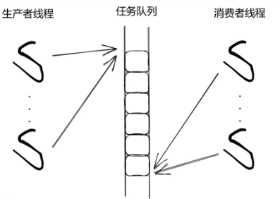
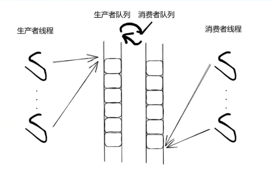

本文最后更新于：6 个月前
单缓冲队列线程池 
在并发数量不高，或者多生产者单消费者的情况下，单个队列足够满足使用要求。常见的线程池设计如下：
1 2 3 4 5 6 7 8 9 10 11 12 13 14 15 16 17 18 19 20 21 22 23 24 25 26 27 28 29 30 31 32 33 34 35 36 37 38 39 40 41 42 43 44 45 46 47 48 49 50 51 52 53 54 55 56 57 58 59 60 61 62 63 64 #include <vector> #include <queue> #include <thread> #include <mutex> #include <condition_variable> #include <functional> #include <future> class ThreadPool {public :using Task = std::function<void ()>;explicit ThreadPool (size_t numThreads) : stop_(false) {for (size_t i = 0 ; i < numThreads; ++i) {emplace_back ([this ] {while (true ) {lock (mtx_);wait (lock, [this ] { return stop_ || !tasks_.empty (); });if (stop_ && tasks_.empty ()) return ; move (tasks_.front ());pop ();task ();template <typename F, typename ... Args>void submit (F&& f, Args&&... args) auto task = std::bind (std::forward<F>(f), std::forward<Args>(args)...);std::lock_guard<std::mutex> lock (mtx_) ;emplace (task);notify_one ();ThreadPool () {std::lock_guard<std::mutex> lock (mtx_) ;true ;notify_all (); for (auto & worker : workers_) if (worker.joinable ()) {join ();private :bool stop_;
一般会将目标函数使用std::bind包装成function对象， 但是如果希望在外层还能够获取线程的运行结果或状态，就需要使用future包装。主要需要修改submit函数：
1 2 3 4 5 6 7 8 9 10 11 12 13 14 15 template <typename F, typename ... Args>auto submit (F&& f, Args&&... args) using ReturnType = std::invoke_result_t <F, Args...>;auto task = std::make_shared<std::packaged_task<ReturnType ()>>(bind (std::forward<F>(f), std::forward<Args>(args)...));get_future ();std::lock_guard<std::mutex> lock (mtx_) ;if (stop_) throw std::runtime_error ("ThreadPool is stopped!" );emplace ([task]() { (*task)(); });notify_one ();return res;
重点在于submit函数，首先使用了可变参数模板，技术点如下：
在 C++11 之前 ，返回类型必须写在 template 函数的 auto 之前，但是此处submit函数的返回值依赖于 F(Args...) 的推导，而模板参数在 F&& f, Args&&... args 解析之前 并不知道 F(Args...) 的返回类型。所以c++11之前没法这么写
C++11 引入 尾置返回类型（trailing return type） ，允许先解析 F(Args...) 再确定返回值
1 2 3 template <typename F, typename ... Args>auto enqueue (F&& f, Args&&... args) -> std::future<typename std::result_of<F (Args...) >::type>
在 C++14 中，引入了 返回类型自动推导 （return type deduction），可以直接写：
1 2 3 4 5 template <typename F, typename ... Args>auto enqueue (F&& f, Args&&... args) using ReturnType = typename std::result_of<F (Args...)>::type;return std::future<ReturnType>{};
在 C++17 及之后，std::invoke_result_t<F, Args...> 取代了 std::result_of，推荐用法：
1 2 3 4 5 6 template <typename F, typename ... Args>auto enqueue (F&& f, Args&&... args) using ReturnType = std::invoke_result_t <F, Args...>;std::packaged_task<ReturnType () > task (std::bind(std::forward<F>(f), std::forward<Args>(args)...)) ;return task.get_future ();
此外，执行线程和提交任务时也可以加上异常处理。
综上，完整的线程池示例：
1 2 3 4 5 6 7 8 9 10 11 12 13 14 15 16 17 18 19 20 21 22 23 24 25 26 27 28 29 30 31 32 33 34 35 36 37 38 39 40 41 42 43 44 45 46 47 48 49 50 51 52 53 54 55 56 57 58 59 60 61 62 63 64 65 66 67 68 69 70 71 72 73 #include <vector> #include <queue> #include <thread> #include <mutex> #include <condition_variable> #include <functional> #include <future> class ThreadPool {public :using Task = std::function<void ()>;explicit ThreadPool (size_t numThreads) : stop_(false) {for (size_t i = 0 ; i < numThreads; ++i) {emplace_back ([this ] {while (true ) {lock (mtx_);wait (lock, [this ] { return stop_ || !tasks_.empty (); });if (stop_ && tasks_.empty ()) return ; move (tasks_.front ());pop ();try {task ();catch (...) {template <typename F, typename ... Args>auto submit (F&& f, Args&&... args) -> std::future<std::invoke_result_t <F, Args...>> using ReturnType = std::invoke_result_t <F, Args...>;auto task = std::make_shared<std::packaged_task<ReturnType ()>>(bind (std::forward<F>(f), std::forward<Args>(args)...));get_future ();std::lock_guard<std::mutex> lock (mtx_) ;if (stop_) throw std::runtime_error ("ThreadPool is stopped!" );emplace ([task]() { (*task)(); });notify_one ();return res;ThreadPool () {std::lock_guard<std::mutex> lock (mtx_) ;true ;notify_all (); for (auto & worker : workers_) if (worker.joinable ()) {join ();private :bool stop_;
双缓冲队列线程池 
从上述代码可以看到，使用单缓冲队列时生产者和消费者共用一把锁，如果并发数较高时，容易发生碰撞。因此对于多生产者多消费者的场景，可以增加一个缓冲队列，生产者线程和消费者线程分别从一个队列中操作任务，当消费者队列空时，交换两个队列。并且使用两把锁，只有在交换队列时会同时锁住，减少碰撞。
示例如下：
1 2 3 4 5 6 7 8 9 10 11 12 13 14 15 16 17 18 19 20 21 22 23 24 25 26 27 28 29 30 31 32 33 34 35 36 37 38 39 40 41 42 43 44 45 46 47 48 49 50 51 52 53 54 55 56 57 58 59 60 61 62 63 64 65 66 67 68 69 70 71 72 73 74 75 76 77 78 79 80 81 82 83 84 85 86 87 88 89 90 91 92 93 94 95 96 97 98 99 100 101 102 103 104 105 106 107 108 109 110 111 #include <vector> #include <queue> #include <thread> #include <mutex> #include <condition_variable> #include <functional> #include <future> #include <stdexcept> #include <utility> class ThreadPool {public :using Task = std::function<void ()>;explicit ThreadPool (size_t numThreads) : stop_(false) { for (size_t i = 0 ; i < numThreads; ++i) {emplace_back ([this ] {while (true ) {cons_lock (cons_mtx_);wait (cons_lock, [this ] {return stop_ || !consQueue_.empty () || !prodQueue_.empty ();if (consQueue_.empty ()) {prod_lock (prod_mtx_);if (!prodQueue_.empty ()) {swap (prodQueue_, consQueue_);if (stop_ && consQueue_.empty ())return ;if (consQueue_.empty ())continue ;move (consQueue_.front ());pop ();try {task ();catch (...) {template <typename F, typename ... Args>auto submit (F&& f, Args&&... args) -> std::future<std::invoke_result_t <F, Args...>> using ReturnType = std::invoke_result_t <F, Args...>;auto task = std::make_shared<std::packaged_task<ReturnType ()>>(bind (std::forward<F>(f), std::forward<Args>(args)...)get_future ();std::lock_guard<std::mutex> lock (prod_mtx_) ;if (stop_)throw std::runtime_error ("ThreadPool is stopped!" );push ([task]() { (*task)(); });notify_one (); return res;ThreadPool () {std::lock_guard<std::mutex> lock (cons_mtx_) ;true ;notify_all (); for (auto & worker : workers_)join ();private :bool stop_;
测试代码： 交带参数的任务，并接受返回值 1 2 3 4 5 6 7 8 9 10 11 12 int main () ThreadPool pool (4 ) ;auto future = pool.submit ([](int a, int b) {return a + b;10 , 20 );"Sum: " << future.get () << std::endl; return 0 ;
输出
多个任务并行执行 1 2 3 4 5 6 7 8 9 10 11 12 13 14 15 16 17 int main () ThreadPool pool (4 ) ;int >> results;for (int i = 0 ; i < 10 ; ++i) {emplace_back (pool.submit ([i] {return i * i;for (auto & f : results) {get () << " " ; return 0 ;
输出
1 0 1 4 9 16 25 36 49 64 81
在线程池析构前等待任务完成 线程池会在析构时自动等待所有线程完成，因此 main() 结束时不需要额外等待。但如果你想手动等待任务完成，可以使用 std::future::get()。
线程池安全退出 如果线程池被销毁，submit() 不能再调用：
1 2 3 4 5 {ThreadPool pool (2 ) ;auto future = pool.submit ([] { return 123 ; });get () << std::endl;
如果你在线程池析构后再调用 submit()，会抛出异常：
1 2 3 ThreadPool* pool = new ThreadPool (2 );delete pool; submit ([] { return 456 ; });